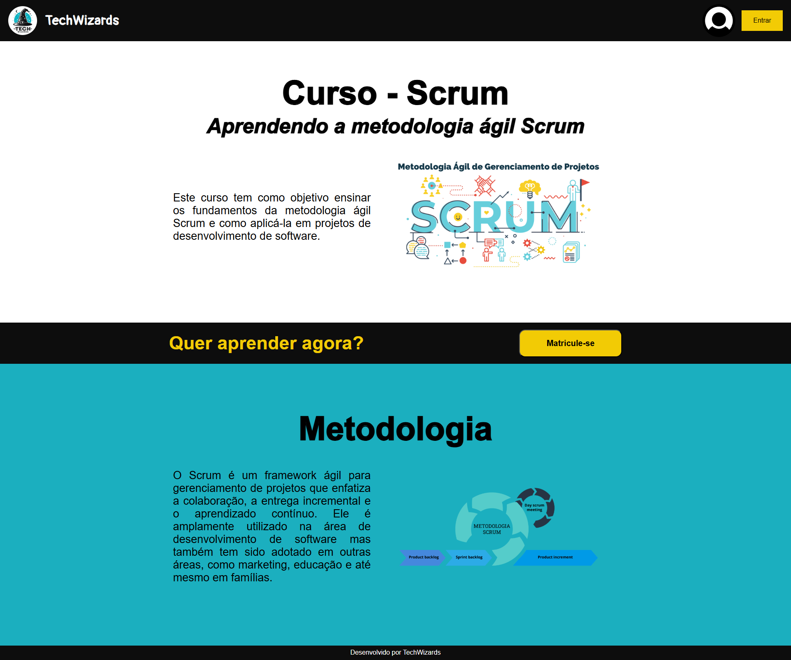
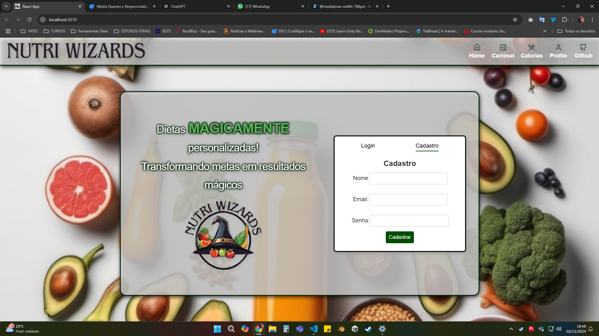
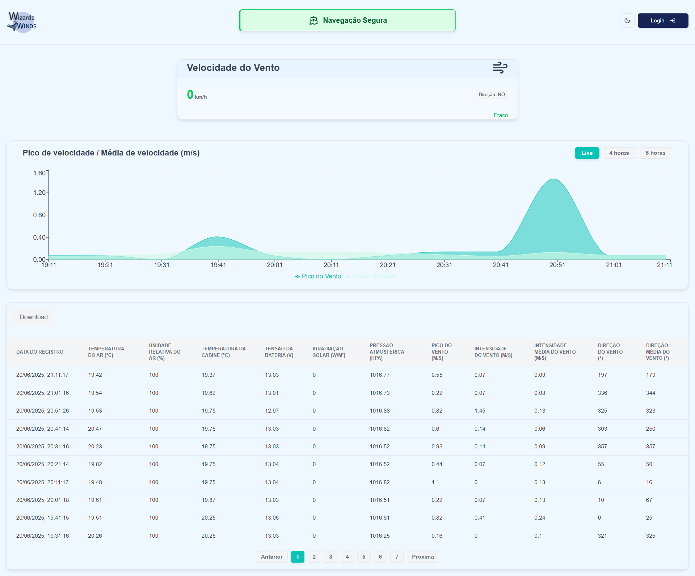
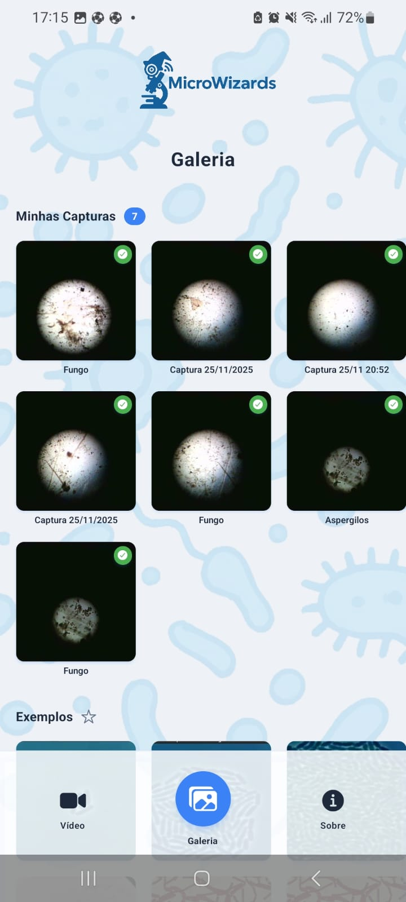
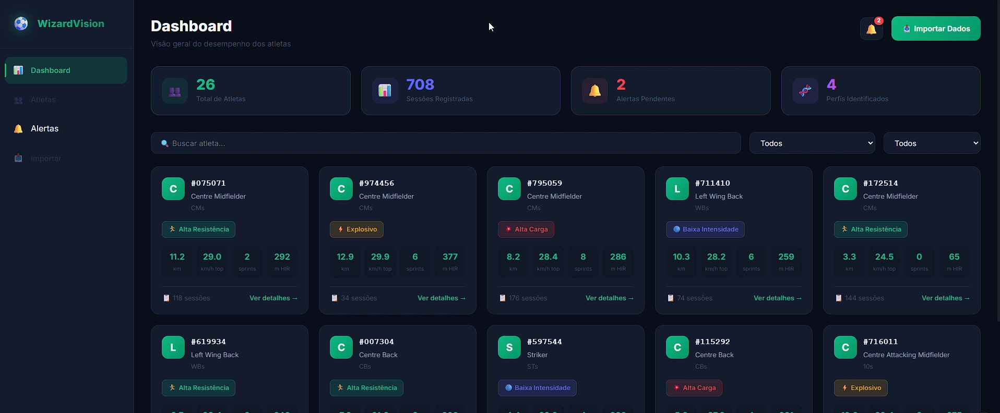
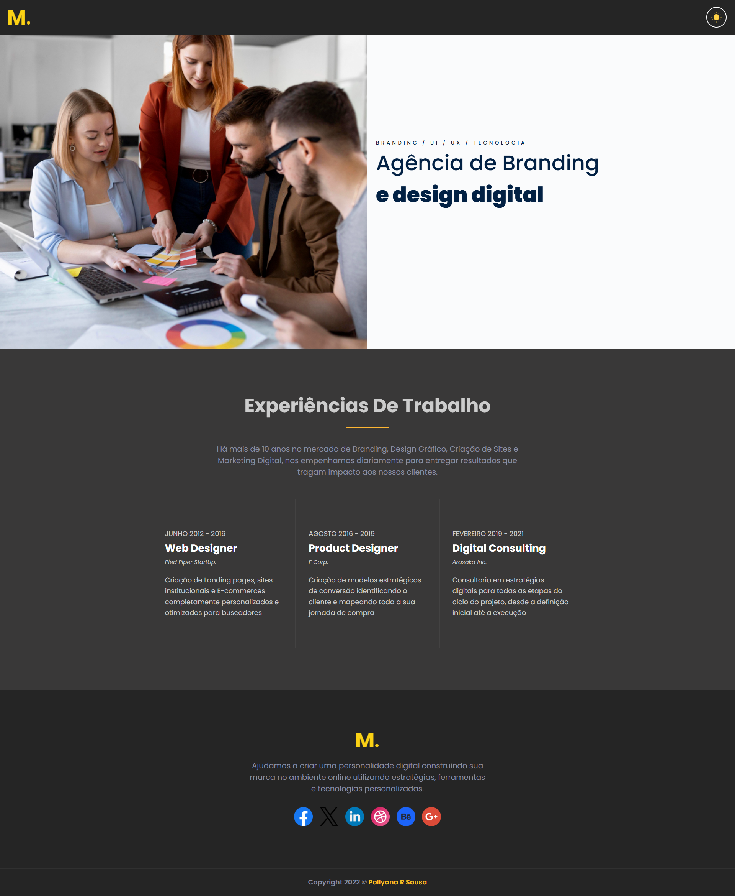
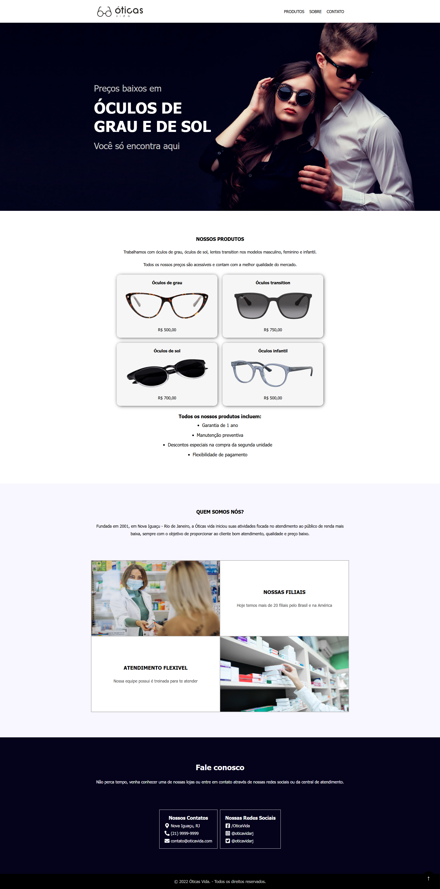
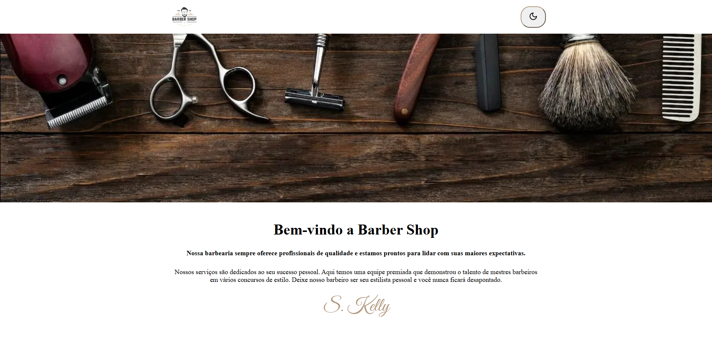
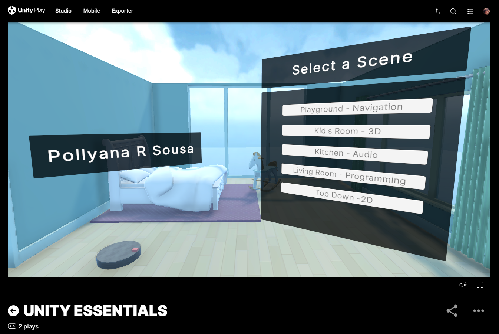

Projetos
Projetos Acadêmicos (ABP – Fatec Jacareí)

ABP 1DSM – 1º Sem. 2024Site de Metodologia Scrum — ABP 1DSM – 1º Sem. 2024
Curso online sobre Scrum desenvolvido no 1º semestre de DSM/Fatec Jacareí, com foco em metodologias ágeis e colaboração em equipe. Atuei como Scrum Master e no desenvolvimento das páginas usando HTML e CSS.
HTML, CSS, JavaScript, PostgreSQL 🔗 Ver Projeto
ABP 2DSM – 2º Sem. 2024Contador de Calorias — ABP 2DSM – 2º Sem. 2024
Aplicação web para monitoramento calórico e recomendação de dietas, seguindo Scrum. UI em React/TypeScript e dados em PostgreSQL. Atuei como Scrum Master e no desenvolvimento das lógicas para realização do calculo do monitoramento calórico e features de tips para o usuário.
HTML, CSS, JavaScript, React, PostgreSQL 🔗 Ver Projeto
ABP 3DSM – 1º Sem. 2025Estação Meteorológica — ABP 3DSM – 1º Sem. 2025
Plataforma web para dados de estações no Lago de Furnas: gráficos, tabelas, comparação, download em CSV e alertas aos navegantes. Atuei como Scrum Master e no desenvolvimento das telas de cadastro e login dos usuários, responsividade do sistema e recurso de download dos dados.
HTML, CSS, JavaScript, React, Next.js, Tailwind, Vue 🔗 Ver Projeto
ABP 4DSM – 2º Sem. 2025Sistema de Captura Remota para Microscópios — ABP 4DSM – 2º Sem. 2025
Sistema que coleta imagens e vídeos de microscópios ópticos via câmera digital acoplada, transmite vídeo em tempo real via Wi-Fi para nuvem, com app mobile e interface web. Atuei como Scrum Master e no desenvolvimento do front end web do sistema, além de documentação.
Raspberry Pi, Python (Flask), React, React Native, GitHub Actions 🔗 Ver Projeto
ABP 5DSM – 1º Sem. 2026WizardVision — ABP 5DSM – 1º Sem. 2026
Sistema de informações para análise de desempenho físico de atletas de futebol com Inteligência Artificial e algoritmos de Machine Learning. Atuei como Scrum Master e no desenvolvimento do backend do sistema, desde a autenticação, importação de dados, desenvolvimento da API e aplicação de algoritmos de machine learning.
React, Node.js, PostgreSQL, Python, Machine Learning, GitHub Actions 🔗 Ver ProjetoProjetos Pessoais

Sorveteria
SPA com React e Next.js representando o site de uma sorveteria fictícia.
React, JavaScript, Next.js 🔗 Ver Projeto
Agência de Design Digital
SPA em React/Next.js para uma agência fictícia, com alternância de tema escuro.
React, JavaScript, Next.js 🔗 Ver Projeto
Ótica Vida
SPA em React/Next.js para uma ótica fictícia.
React, JavaScript, Next.js 🔗 Ver Projeto
Landing Page Barbearia
Landing page em React com controle de tema via useState (modo escuro).
React, JavaScript, Next.js 🔗 Ver Projeto
Clínica Médica
Site institucional para clínica médica fictícia.
React, JavaScript, Next.js 🔗 Ver Projeto


Módulo Unity Essentials
Projeto do módulo Unity Essentials (Unity Learn) para fundamentos da engine.
C#, Unity 🔗 Ver Projeto